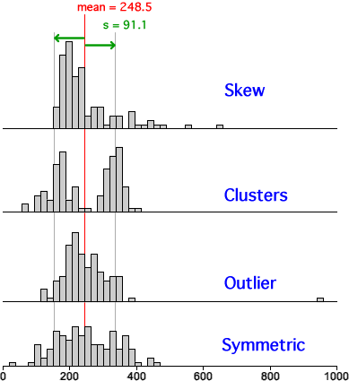

Many different distributions have the same mean and standard deviation. If analysis of a data set only involves its the mean and standard deviation, other important features of its distribution may be lost.
Always look at the distribution's shape graphically before 'condensing' the data into a mean and standard deviation for further analysis.
What the mean and standard deviation don't tell you
Outliers, clusters and skewness are important aspects of the distribution's shape. Ignoring them can result in the wrong conclusions.
The four distributions are repeated here as histograms. The mean and standard deviation fail to distinguish between them.
